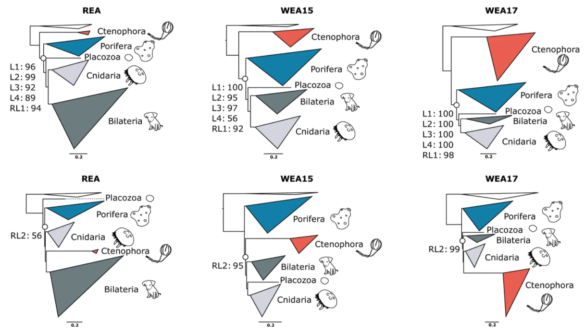
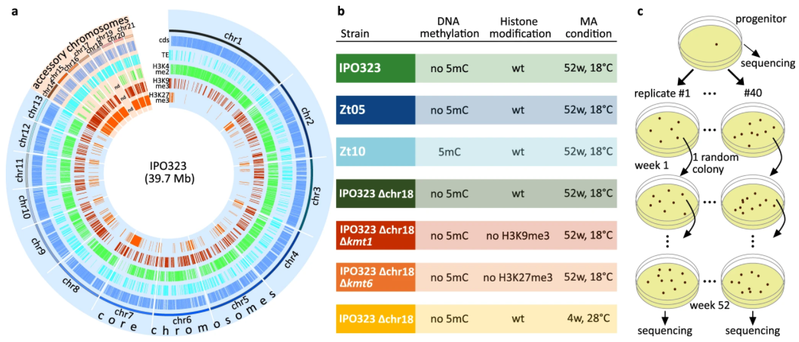
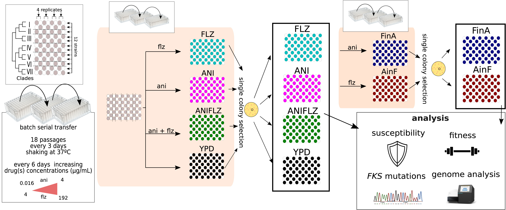
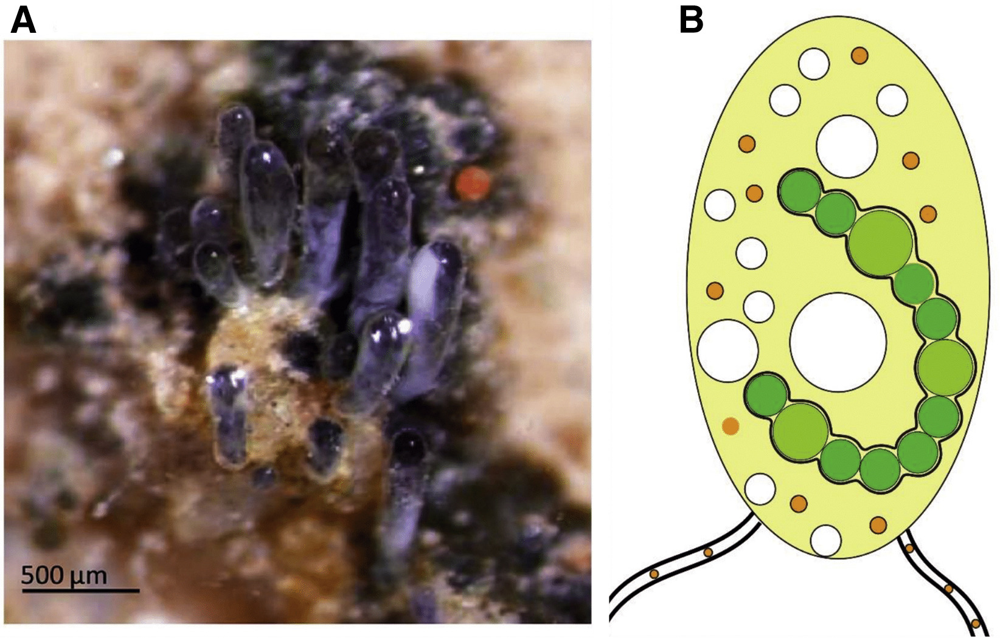

Evo GoodReads 2021
Digestible synopses of recent scientific articles about evolution.
A supergene underlies linked variation in color and morphology in a Holarctic songbird
Read the Evo GoodReads digest!
Genome sequencing of redpoll finches reveals that an inversion controls multiple traits such as melanogenesis,
carotenoid coloration, and bill shape. This finding reveals how a single inversion can impact phenotypic variation.
Funk, et al. (2021).
Nat. Commun. doi:10.1038/s41467-021-27173-z.
Population insights into the European Batrachochytrium salamandrivorans epidemic
 Read the Evo GoodReads digest!
Read the Evo GoodReads digest!
Population-level sequencing of six outbreak populations of the emerging pathogen
Batrachochytrium salamandrivorans reveals intra-lineage diversity and isolate
specific adaptations through a constellation of evolutionary forces.
Kelly, et al. (2021).
Nat. Commun. doi:10.1038/s41467-021-27005-0.
Comparative genomics of wild and domestic ducks provides insight into avian domestication
 Read the Evo GoodReads digest!
Read the Evo GoodReads digest!
Comparative genomics of high-quality genome assemblies of wild and domesticated ducks
provides insight into the impact of artificial human selection during avian domestication.
These results pave the way for understanding duck evolution and other domestication events.
Zhu, et al. (2021).
Nat. Commun. doi:10.1038/s41467-021-26272-1.
Are bacterial chromosomes mobile genetic elements?
 Read the Evo GoodReads digest!
Read the Evo GoodReads digest!
Horizontal gene transfer among chromosomal genes in bacteria can exceed that of mobile
genetic elements such as plasmids. This observation suggests bacterial chromosomes
should be thought of as mobile genetic elements.
Hall (2021).
Nat. Commun. doi:10.1038/s41467-021-26758-y.
Recoding and gene-specific mixture models suggests sponges are the root of the animal tree

Read the Evo GoodReads digest!
Incorporating mixture models and character recoding into partitioned phylogenomic analysis revealed better
fitting models support sponges as sister to all other animals.
Redmond and McLysaght (2021).
Nat. Commun. doi:10.1038/s41467-021-22074-7.
Epigenetics and environment impact mutation rate in a pathogenic fungus

Read the Evo GoodReads digest!
Epigenetics and environment impact genome-wide and intra-genomic mutation rate variation in a
fungal wheat pathogen Zymoseptoria tritici, which can influence evolutionary trajectory.
Habig, et al. (2021).
Nat. Commun. doi:10.1038/s41467-021-26108-y.
Microevolution leads to antifungal drug resistance in a fungal pathogen

Read the Evo GoodReads digest!
Experimental evolution reveals the mutational paths that lead to antifungal drug resistance and cross-resistance
in a major fungal pathogen Candida glabrata.
Ksiezopolska et al.
(2021). Curr. Biol. doi:10.1016/j.cub.2021.09.084.
The evolutionary history of fungi
 Read the Evo GoodReads digest!
Read the Evo GoodReads digest!
Phylogenomics resolves historically contentious branches in the fungal tree of life and identifies
episodic radiation events thereby establishing a framework for studies of fungal evolution.
Li
et al. (2021). Curr. Biol. doi:10.1016/j.cub.2021.01.074.
Insights into the emergence of the mycorrhizal symbiosis

Read the Evo GoodReads digest!
Genome sequence of a basal Arbuscular mycorrhizal fungi provides key insights into the evolution
origin of plant-fungus symbiosis, an event that contributed to terrestrial colonization by plants.
Malar et al.
(2021). Curr. Biol. doi:10.1016/j.cub.2021.01.058.